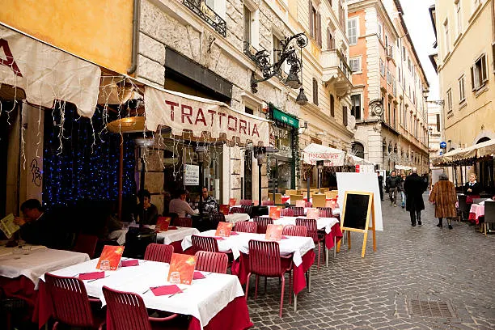
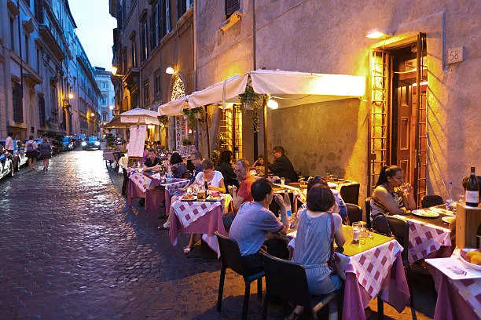
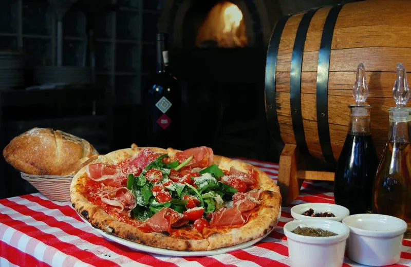

Sobre nosotros
El Primer Amor – El Sabor de la Memoria
Todo comenzó no con un plan de negocios, sino con un flechazo. Mi primer viaje a Italia fue una casualidad, una escapada sin más expectativas que ver el Coliseo y comer una buena pizza. Pero Italia tenía otros planes para mí. No me enamoré en Roma ni en Florencia, sino en un pequeño callejón de un pueblo toscano cuyo nombre apenas podía pronunciar. Allí, en una trattoria familiar con no más de diez mesas, ocurrió la magia. El aire olía a ajo sofrito, a albahaca fresca y a la piedra húmeda de los muros centenarios. El dueño, un hombre mayor con las manos enharinadas, no hablaba mi idioma, pero nos entendimos perfectamente a través de sonrisas y gestos. Me sirvió un simple plato de pici cacio e pepe. Con el primer bocado, el tiempo se detuvo. No era solo pasta; era la calidez de una nonna, la paciencia de una tradición y el orgullo de ingredientes puros. Esa noche no solo cené, sino que descubrí que la comida era un lenguaje universal de amor y pertenencia. Regresé a casa, pero una parte de mi corazón se quedó en esa mesa, en ese callejón.


La Decisión – El Puente Entre el Sueño y la Realidad
De vuelta en Culiacán, el recuerdo de Italia se convirtió en una obsesión deliciosa. Intentaba replicar esos sabores en mi cocina, buscando el queso pecorino perfecto, experimentando con masas para pasta. Cada intento era un homenaje, pero también un recordatorio de lo que faltaba: no era solo la receta, era la atmósfera, la sensación de comunidad. El sueño comenzó como un susurro: "¿Y si pudiera traer un pedazo de esa Italia aquí?". Durante años, fue solo eso, un sueño. Un "algún día" que parecía lejano e inalcanzable. Pero la idea, alimentada por la pasión, se negó a desaparecer. La decisión final no fue un momento de revelación divina, sino una elección consciente. Fue mirar mi vida y entender que la mayor aventura sería intentar construir ese sueño, en lugar de vivir preguntándome "qué hubiera pasado si...". Decidí que no quería imitar esa trattoria toscana, sino honrar su espíritu: la honestidad en el plato, la calidez en el servicio y la alegría de compartir. Así nació la idea de una trattoria moderna, un puente entre la tradición italiana y el corazón de nuestra tierra.
El Presente – Construyendo Nuestra Casa
Hoy, ese sueño tiene paredes, mesas y un horno que espera ser encendido. Estamos en medio del caos creativo, del polvo de la construcción y de las noches en vela probando menús. Cada decisión, desde el color de las servilletas hasta la selección de nuestros proveedores locales, la tomamos con el recuerdo de ese primer amor en mente. Nuestro equipo no solo está formado por chefs y meseros, sino por soñadores que comparten la misma pasión. Aún no hemos abierto nuestras puertas, pero nuestra trattoria ya tiene alma. Ya huele a promesa, a café recién hecho y a la salsa de tomate de la abuela. Estamos en el proceso de construir no solo un restaurante, sino un hogar para quienes, como yo, buscan una conexión genuina en cada plato. Esta historia aún se está escribiendo, y nos emociona enormemente que, muy pronto, tú formes parte del siguiente capítulo.
